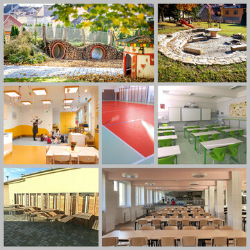

Školství

Děti jsou naše budoucnost, a proto je naší povinností i nejlepší investicí zajistit jim ty nejlepší podmínky nejen pro vzdělávání, ale i pro jejich rozvoj ve volnočasových aktivitách.
Město Trhové Sviny je zřizovatelem základní a mateřské školy. Obě tyto školy jsou příspěvkovými organizacemi města, spolupráce je tedy velice těsná. Město na jejich rozvoj vždy velmi dbalo a podařilo se získat i celou řadu dotací.
Ve městě má také sídlo gymnázium, střední škola, základní umělecká škola a praktická škola, jejichž zřizovatelem je Jihočeský kraj. Spolupráce s těmito školami i s jejich zřizovatelem je velmi dobrá a je oboustranně výhodné ji i nadále rozvíjet.
Kapacita základní školy je v současnosti dostatečná, jiná je situace v mateřské škole. Je velkým bonusem, že se u nás rodí hodně dětí i že se k nám stěhují mladé rodiny s malými dětmi. Skokově ale vzrostla potřeba vyšší kapacity mateřské školy.
Podařilo se
-
v základní škole rozšířit a kompletně zrekonstruovat a modernizovat školní jídelnu a kuchyni, vyměnit podlahu v tělocvičně, vybavit odborné učebny, zřídit venkovní učebnu. Probíhá výstavba nové školní zahrady.
-
v Mateřské škola Čtyřlístek zřídit přírodní zahradu, v Mateřské škole Beruška vybudovat novou třídu.
-
v budově gymnázia, která je ve vlastnictví města, jsme vyměnili okna a osvětlení.
-
navýšit kapacitu mateřské školy - v areálu MŠ Čtyřlístek vybudovat nový pavilon.
-
upravit zahradu v MŠ Beruška.
-
v základní škole zlepšovat a modernizovat vybavení tříd a jejich zázemí, včetně šaten.
-
rekonstruovat budovu praktické školy.
-
nadále podporovat aktivity učitelů a žáků školy.
-
podporovat gymnázium, střední školu, základní uměleckou školu i praktickou školu v našem městě a podpořit jejich vzájemnou spolupráci.
-
maximálně využít dotačních příležitostí pro školy.